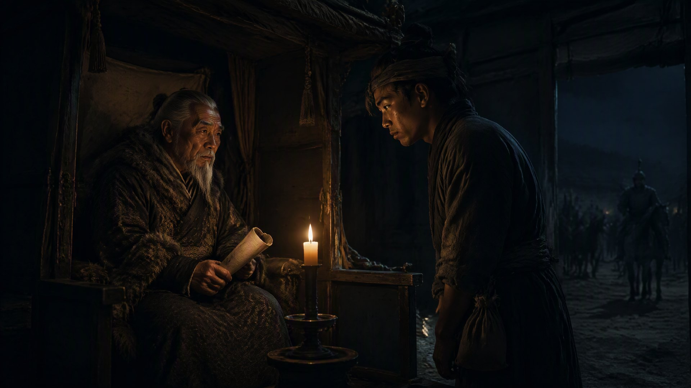

蒙汉之择

应天府驿馆里，阿鲁台已经老得走不动长路了。
他是被人用一乘小轿从码头抬过来的。当年在百曲灶房里跪着递羊皮卷的那个中书右丞，如今头发全白了，手背上全是老人斑，可那双眼睛还是跟二十三年前一样——锐利，深沉，看人的时候像在称一杆老秤。火焱走进驿馆正堂的时候，他正在喝一碗加了盐的奶茶。他放下碗，看着面前这个二十出头的年轻人，背上还是那把黑弓，腰间挂的已不是当年的粗布短打——是应天府水师副将的铜符。火家的灶台上多了一面火锻百炼的铜牌，和一道大明的军器诏令。
“火家——大郎。”阿鲁台开口了，声音比从前更沙哑，可蒙语的尾音还在，“二十三年不见。你长成了一个不用跪的人了。”
“阿鲁台大人远来。当年漠北使臣的金印我还收着——在百曲灶台下。”火焱说。
阿鲁台笑了。笑里带着几分苦涩——他知道金印没用了。当年扩廓帖木儿封赤氏归元的条件全都落了空：火家没有归元，而是在江南扎了根。如今再谈归元已经来不及了，他来不是为了索取旧账，而是为了在北元崩溃之前把最后一条可以走的路铺进中原。“老夫今天来只有两件事——你火家的铁器养着半个明军的箭头，你火家的血脉流着一半赤氏的骨血。扩廓王爷让老夫替他问一句话：你火家——”他看了一眼火焱背上的黑弓，弓是直脱儿的弓，人是汉家的将。他缓缓把下半句从喉咙里托出来，“——到底姓火，还是姓赤？”
驿馆安静了很久。冯参将站在门外背着手没进来。火焱没有立刻回答，他把黑弓从背上取下来横放在膝上，弓弦上当年封坛余烬烫过的焦痕还在手指摸过时依然微温。他看着阿鲁台身边那个年轻人——赤老温。二十出头，一张被草原风沙吹粗了的脸，穿着一身蒙古式的皮甲，腰间挂的不是刀，是一根半焦的柴。那根柴跟直脱儿在梦里握过的一模一样。
“赤老温——你爷爷的爷爷，是谁？”
“阿察儿。”赤老温说出这个名字的时候嗓子是哑的，汉话极生硬，逐字咬着舌尖往外推，“铁木真大汗的随卫长，直脱儿公的兄长——是阿察儿留在漠北草场的后人。直脱儿南征时把赤氏的弓带到了江南，阿察儿守着草场——七十年这两支赤氏的血脉从来没碰过头。我手里这根柴是祖父从阿察儿帐前那口灶里烧了一生留下来的——也是赤家的火。”
一支南下汉化为灶，一支留守漠北守着草场。七十年后两支血脉在这间应天府的驿馆里碰了头：一个背着直脱儿的黑弓，一个攥着阿察儿的焦柴。
火焱接过那根柴，和自己怀里那块刻着「归家」的封坛旧砖并排放在桌上。两块烧了七十年的火——一块刻着归家，一块熏着草原的烟。他对阿鲁台说：“火家不归元——火家只归灶。但火家的灶上永远给北边的人留一双筷子。赤老温留下——留在百曲，以火家远亲的名义。不是蒙古王族的名义，不封漠南王，不受北元金印。火和赤本就是一个字的两面——当年在泉州对着赤老伯说过这句话，今天对这间驿馆里所有姓赤的人再说一遍。”
阿鲁台沉默了很久。他把那碗加盐的奶茶端起来一饮而尽，站起来，走到他面前，弯腰，做了一个二十三年前在百曲灶房里做过的那动作——右手抚左胸，深躬。“扩廓王爷托老夫问的第二件事——如果火家不归元，北元的铁器能不能像明军一样买你的箭头？”火焱抬头看着老人斑的脸，隔着灶膛里跳动的焰心他答得很轻，但驿馆里的每一个人都听见了：“火家不卖箭头给打自家灶台的人。帖先生当年在扬州漕河留给火家的军饷——我至今没动过。那些银子不是元廷的军饷，是直脱儿公留给归汉子孙赔给被马踩过的田地的。你把这包东西带回去给扩廓王爷——”他把灶台砖下那包完好的军饷推过去，“告诉他这世上没有赤氏的弓了，也不叫元廷的箭了。它只有一个名字。”
他顿了顿，把赤老温带来那根半焦的柴和封坛旧砖一并抱进怀里。两块烧了七十年的火在他胸口被七色归元的火焰同时点燃——不是赤红不是橘黄，是透明的、纯净的、像直脱儿在归元之问那一夜煮开的那锅清水冒出的最后一缕轻烟。这缕烟给北元的人留了退路——不是归顺的退路，是回家的退路。
冯参将从门外走进来，把一份刚刚由朱元璋亲笔批下的诰命放在桌上。诰命上写着——百曲灶火号，世袭正三品海路转运使，兼领火锻军器司。火家一门灶田、铺号、船坞永设汉军不驻卫所。末尾是两行朱砂小字——“灶火为证，方可归汉。”落款不是朱元璋，是大明洪武。
他把诰命卷起来放进怀里，走进门外院子里。赤伯升没有来——他在百曲守着一口十四年没熄过的炉。阿鲁台被侍从扶上轿之前把剩下的小半碗奶茶轻轻泼在驿馆门外的土里，那个动作像蒙古老人在草原祭火时往石头底下倒第一碗酒。赤老温跟在他身后，怀里抱着封坛旧砖从杭州西湖火神庙带回的炭末，对火焱说留一口灶给我砌——就砌在百曲火锻炉对过那条往东的巷口，灶堂宽二指半，灰道朝北偏西。火焱说好。
十三年，三封信、三方势力、两句话——一句话是直脱儿刻在匾上的，另一句是朱元璋亲手补上去的。他从十三年前松江城那口破灶房里被兵头子拎着领子问“你姓啥”开始，走到今天终于可以把这两句话都还给身后烧着七色火焰的灶膛。赤家的火不用再替任何人证明身份了。灶火为证——方可立家。
而那个从北边草原来的年轻人从怀里悄悄取出一缕烧过七十年的柴灰，放在即将砌筑的灶口前。柴灰底下躺着一张羊皮纸，上面只有一行字：阿察儿后人，归灶。
· 第四卷《焚天》 ·